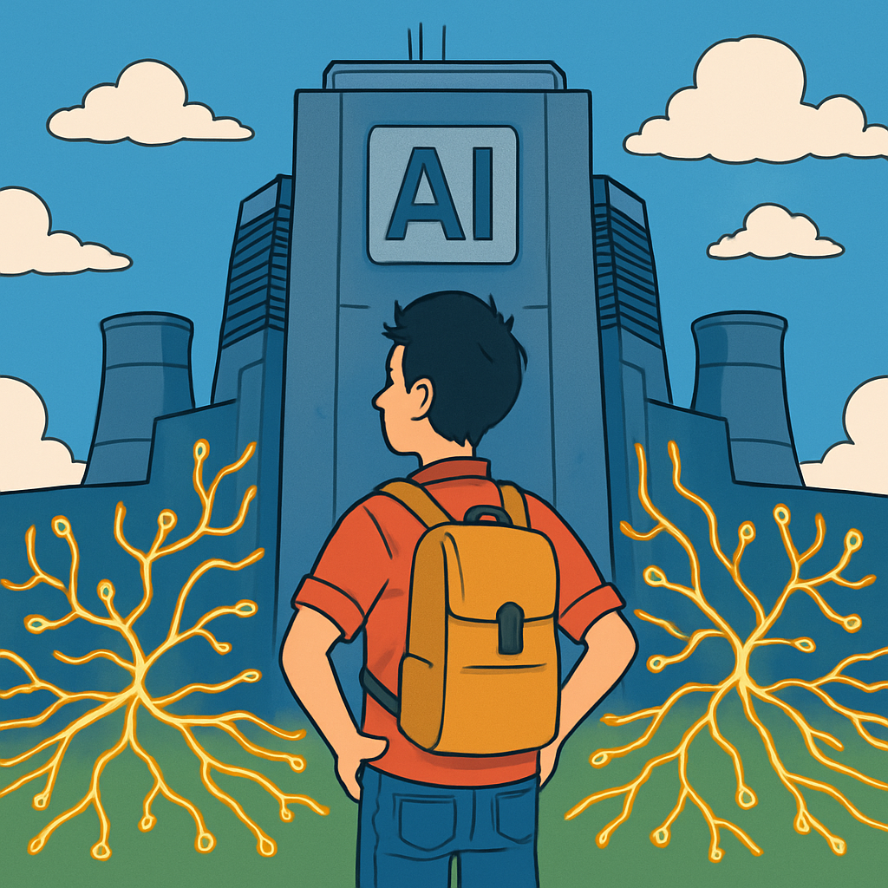

Microlearning
Künstliche Intelligenz ist überall – von ChatGPT über Bildgenerierung bis hin zu Code-Assistenten. Doch hinter jeder KI-Antwort steckt ein enormer Energieaufwand, den die meisten komplett unterschätzen.

Aber nicht nur das Training ist energieintensiv. Auch jede einzelne Nutzung – die sogenannte Inferenz – kostet Energie:
- Eine einzelne ChatGPT-Anfrage benötigt ca. 10-mal mehr Energie als eine Google-Suche
- Bildgenerierung (z. B. DALL-E, Midjourney) ist nochmals deutlich energieintensiver als Textgenerierung
- Ein einziges KI-generiertes Bild verbraucht etwa so viel Strom wie das volle Laden eines Smartphones
- Weltweit verbrauchen KI-Rechenzentren bereits mehr Strom als viele Länder
Es gibt aber auch Ansätze, den Verbrauch zu reduzieren:
- Edge AI: Kleine Modelle, die direkt auf deinem Gerät laufen – ohne Cloud-Anfrage
- Lokale KI: Tools wie Ollama ermöglichen es, Sprachmodelle lokal auszuführen
- Effizientere Modelle: Techniken wie Quantisierung und Pruning reduzieren den Energiebedarf drastisch
- Bewusste Nutzung: Nicht jede Aufgabe braucht ein LLM – manchmal reicht eine einfache Suche
Tat / Einstellung
Prüfe dein KI-Nutzungsverhalten: Nutzt du KI bewusst oder reflexartig? Oft greifen wir zu ChatGPT, obwohl eine einfachere Lösung reichen würde.
Aufgabe
- Schreibe 3 Situationen auf, in denen KI für dich wirklich sinnvoll ist (z. B. Code-Debugging, komplexe Recherche, Übersetzung)
- Schreibe 3 Situationen auf, in denen KI überflüssig wäre (z. B. einfache Rechtschreibprüfung, Taschenrechner-Aufgabe, bekannte Fakten nachschlagen)
- Vergleiche: Wie oft greifst du im Alltag reflexartig zu KI, obwohl es eine effizientere Alternative gäbe?
Tipp: Beobachte dich die nächsten Tage selbst – und notiere jedes Mal, wenn du ein KI-Tool öffnest, ob es wirklich die beste Wahl war.
Reflexion
Wenn jede KI-Anfrage CO₂ kostet – ab wann lohnt sich der Einsatz wirklich?
KI lohnt sich vor allem dann, wenn sie Aufgaben erledigt, die manuell unverhältnismässig viel Zeit kosten würden – oder wo die Qualität des Ergebnisses klar besser ist. Für einfache Aufgaben, die du in wenigen Sekunden selbst lösen könntest, ist der Energieaufwand einer KI-Anfrage kaum zu rechtfertigen. Die Frage ist nicht «Kann KI das?», sondern «Muss KI das?».
Challenge
Versuche einen ganzen Tag lang, komplett auf KI-Tools zu verzichten und alles manuell zu erledigen – Recherche, Code-Probleme, Texte schreiben.
Dokumentiere am Ende des Tages:
- Welche Aufgaben konntest du problemlos ohne KI lösen?
- Wo hast du KI wirklich vermisst – und warum?
- Was hat dich überrascht?